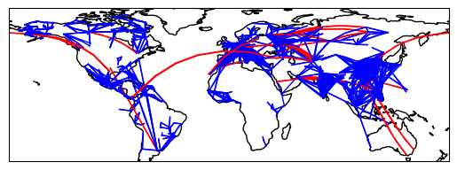
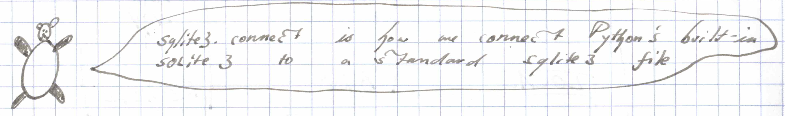
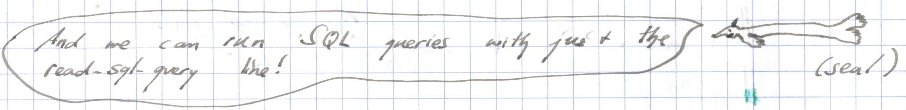
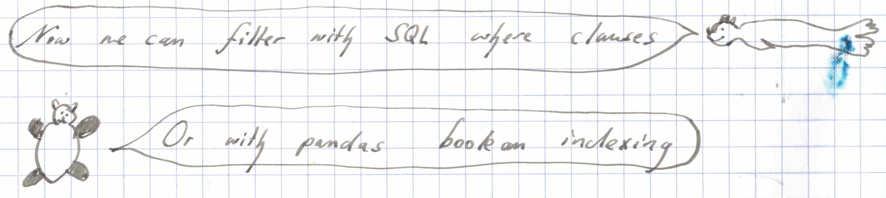
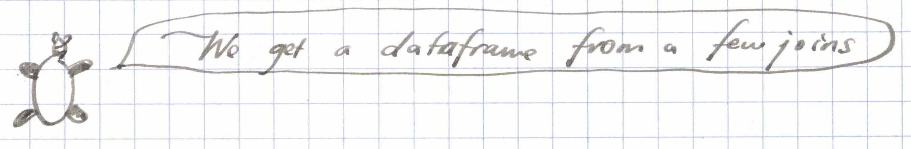
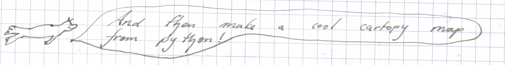

SQLite and Pandas quick intro
old-comics
pandas
sql

An early try at programming-with-cartoons, in the spirit of _why’s Poignant Guide. Current work is at home.
Download the flights database here: flights.db

import pandas as pd
import sqlite3
import cartopy.crs as ccrs
import matplotlib.pyplot as plt
pd.set_option("max_colwidth", 10)
pd.set_option("display.max_rows", 5)
con = sqlite3.connect("flights.db")
airdf = pd.read_sql_query("select * from airports;", con)
airdf| index | id | name | city | country | code | icao | latitude | longitude | altitude | offset | dst | timezone | |
|---|---|---|---|---|---|---|---|---|---|---|---|---|---|
| 0 | 0 | 1 | Goroka | Goroka | Papua … | GKA | AYGA | -6.081689 | 145.39… | 5282 | 10 | U | Pacifi… |
| 1 | 1 | 2 | Madang | Madang | Papua … | MAG | AYMD | -5.207083 | 145.7887 | 20 | 10 | U | Pacifi… |
| … | … | … | … | … | … | … | … | … | … | … | … | … | … |
| 8105 | 8105 | 9540 | Deer H… | Deer H… | United… | DHB | 48.618397 | -123.0… | 0 | -8 | A | Americ… | |
| 8106 | 8106 | 9541 | San Di… | San Diego | United… | OLT | 32.7552 | -117.1995 | 0 | -8 | A | Americ… |
8107 rows × 13 columns

candf = pd.read_sql_query("select * from airports where country = 'Canada';", con);
candf| index | id | name | city | country | code | icao | latitude | longitude | altitude | offset | dst | timezone | |
|---|---|---|---|---|---|---|---|---|---|---|---|---|---|
| 0 | 20 | 21 | Sault … | Sault … | Canada | YAM | CYAM | 46.485001 | -84.50… | 630 | -5 | A | Americ… |
| 1 | 21 | 22 | Winnip… | Winnipeg | Canada | YAV | CYAV | 50.056389 | -97.0325 | 760 | -6 | A | Americ… |
| … | … | … | … | … | … | … | … | … | … | … | … | … | … |
| 433 | 8103 | 9538 | Port M… | Port M… | Canada | YMP | 50.575556 | -127.0… | 225 | -8 | A | Americ… | |
| 434 | 8104 | 9539 | Sulliv… | Sulliv… | Canada | YTG | 50.883333 | -126.8… | 0 | -8 | A | Americ… |
435 rows × 13 columns

airdf.loc[airdf.country == "Canada"]| index | id | name | city | country | code | icao | latitude | longitude | altitude | offset | dst | timezone | |
|---|---|---|---|---|---|---|---|---|---|---|---|---|---|
| 20 | 20 | 21 | Sault … | Sault … | Canada | YAM | CYAM | 46.485001 | -84.50… | 630 | -5 | A | Americ… |
| 21 | 21 | 22 | Winnip… | Winnipeg | Canada | YAV | CYAV | 50.056389 | -97.0325 | 760 | -6 | A | Americ… |
| … | … | … | … | … | … | … | … | … | … | … | … | … | … |
| 8103 | 8103 | 9538 | Port M… | Port M… | Canada | YMP | 50.575556 | -127.0… | 225 | -8 | A | Americ… | |
| 8104 | 8104 | 9539 | Sulliv… | Sulliv… | Canada | YTG | 50.883333 | -126.8… | 0 | -8 | A | Americ… |
435 rows × 13 columns

routes = pd.read_sql_query("""
select sa.code as sacode, da.code as dacode, cast(sa.longitude as float) as source_lon,
cast(sa.latitude as float) as source_lat,
cast(da.longitude as float) as dest_lon,
cast(da.latitude as float) as dest_lat
from routes
inner join airports sa on sa.id = routes.source_id
inner join airports da on da.id = routes.dest_id;
""",con)
routes| sacode | dacode | source_lon | source_lat | dest_lon | dest_lat | |
|---|---|---|---|---|---|---|
| 0 | AER | KZN | 39.956589 | 43.449928 | 49.278728 | 55.606186 |
| 1 | ASF | KZN | 48.006278 | 46.283333 | 49.278728 | 55.606186 |
| … | … | … | … | … | … | … |
| 67200 | FRU | OSS | 74.477556 | 43.061306 | 72.793269 | 40.608989 |
| 67201 | OSS | FRU | 72.793269 | 40.608989 | 74.477556 | 43.061306 |
67202 rows × 6 columns

ax = plt.axes(projection=ccrs.PlateCarree())
ax.coastlines()
for name, row in routes[:3000].iterrows():
distcolor = "blue" if abs(row["source_lon"] - row["dest_lon"]) < 30 else "red"
plt.plot([row.source_lon, row.dest_lon], [row.source_lat, row.dest_lat],
color=distcolor, linewidth=1,
transform=ccrs.Geodetic(),)
plt.show()read the transcript!
bubble 1: Panda says sqlite3.connect is how we connect Python’s built-in SQLite3 to a standard sqlite3 file.
bubble 2: Seal says And we can run SQL queries with just the read_sql_query line
bubble 3: Seal says we can filter with SQL where clauses, and Panda replies Or with pandas boolean indexing
bubble 4: Panda says we get a dataframe from a few joins.
bubble 5: Seal says and then make a cool Cartopy map from python
Read more details here: https://www.dataquest.io/blog/python-pandas-databases
Get the jupyter notebook here: SQLite and Pandas Jupyter Notebook